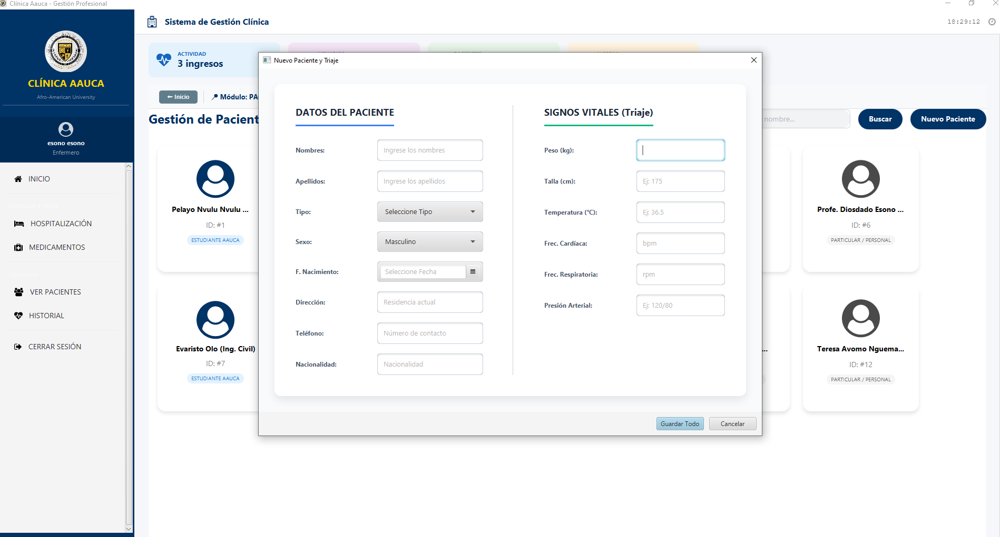

Versión 1.0 Estable
Salud &
Tecnología
Gestión médica profesional y registro de signos vitales estructurado en tiempo real.
Desarrollado para el campus de la Universidad Afro-Americana de África Central.
DESCARGAR SETUP EXE

Instalación Local
Asistente Inno Setup
Instalador optimizado con acuerdo EULA.
Clínica AAUCA V1.0

Interfaz de Signos Vitales
Registro clínico estructurado en dos columnas: datos de filiación del paciente junto a sus constantes físicas e historial.